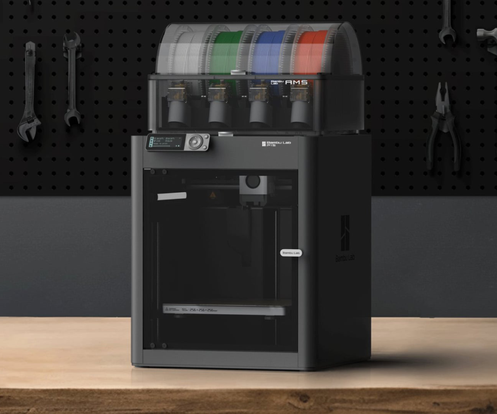
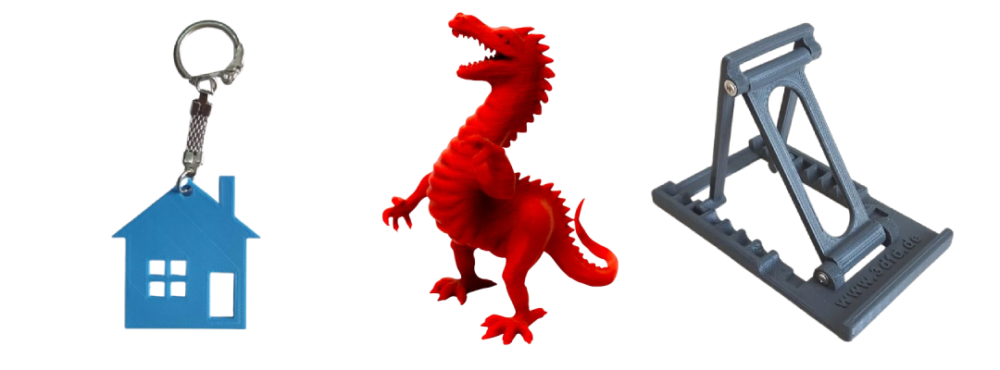

Magazin 3D specializat in printare 3D
Produse printate 3D personalizate prin tehnologie moderna
Tipar3D este un magazin 3D specializat in printare 3D si tipar 3d pentru clienti care doresc produse printate 3d personalizate.
Folosim tehnologie moderna de printare 3D pentru a crea obiecte 3d, figurine 3d si piese 3d functionale, adaptate nevoilor fiecarui client.
Despre serviciile noastre de printare 3D
Tipar3D este un magazin 3D specializat in printare 3D si tipar 3d pentru realizarea de produse printate 3d personalizate.
Prin personalizare 3d si tehnologie moderna, realizam obiecte 3d unice si piese 3d adaptate cerintelor clientilor nostri.
Un exemplu de utilizare a tehnologiei poate fi gasit aici: https://en.wikipedia.org/wiki/3D_printing#Applications
Afla mai multe despre tehnologia moderna de printare 3D pe Wikipedia .
Termeni folositi in printare 3D
- Printare 3D
- Proces de creare a unui obiect tridimensional prin depunerea succesiva de material.
- Tipar 3D
- Tehnologie moderna utilizata pentru realizarea produselor printate 3D.
- Personalizare 3D
- Adaptarea unui model 3D in functie de cerintele clientului.
{kind=link}

| Material | Pret (lei / gram) | Rezistenta | Utilizare recomandata |
|---|---|---|---|
| PLA | 0.25 lei / gram | Medie | Figurine decorative |
| Prototipuri si obiecte usoare | |||
| PETG | 0.35 lei / gram | Ridicata | Piese functionale |
| Suporturi si accesorii tehnice | |||
| ABS | 0.40 lei / gram | Ridicata | Piese rezistente la temperatura |
| Carcase si componente mecanice | |||
| TPU | 0.50 lei / gram | Flexibil | Piese elastice si protectii |
| Preturile sunt orientative si pot varia in functie de complexitatea modelului, materialul utilizat si timpul de printare. | |||
Evenimente Tipar3D
- , Workshop Printare 3D pentru incepatori - Demonstratie practica de tipar 3d si personalizare 3d pentru studenti si pasionati.
- , Lansare colectie Figurine 3D - Prezentam o noua serie de figurine 3d si obiecte 3d decorative.
- , Reduceri la Produse Printate 3D - Oferim discount pentru toate produsele printate 3d si piesele 3d realizate la comanda.
Anunt important
ATENTIE! In perioada sarbatorilor comenzile de printare 3D pot avea intarzieri.
Pentru rezultate excelente trebuie sa puneti accentul pe calitate, nu doar pe pret.
Oferim printare 3D, produse printate 3D si personalizare 3D la standarde ridicate.
Utilizatori online
Momentan sunt 12 utilizatori conectati.
Statistici Tipar3D
Nivelul de satisfactie al clientilor:
Gradul de ocupare al imprimantelor in aceasta perioada:
De ce sa alegi Tipar3D pentru printare 3D?
Alegand magazinul nostru 3D, beneficiati de:
- Servicii rapide de printare 3D
- Produse printate 3d durabile
- Figurine 3d personalizate
- Piese 3d realizate cu precizie
- Consultanta pentru personalizare 3d
Indiferent daca doriti obiecte 3d unice sau piese 3d functionale, serviciile noastre de tipar 3d sunt adaptate cerintelor dumneavoastra.
Informatii despre site
- Versiune site: 1.0
- Server uptime: 99.9%
- Ultima actualizare: 2026
Servicii de tipar 3D si personalizare 3D
Produse printate 3D la comanda
Oferim produse printate 3d realizate la comanda, inclusiv figurine 3d tematice, obiecte 3d decorative si piese 3d pentru prototipuri.
Puteti descarca un exemplu de model 3D: Descarca model 3D
Playlist tutoriale printare 3D
Urmatorul playlist prezinta tutoriale despre modelare si printare 3D. Videoclipurile se redau automat si playlistul se reia de la inceput dupa finalul ultimului videoclip.
Calcul estimativ al costului unei printari 3D
Costul unui obiect printat 3D poate fi estimat folosind formula:
De exemplu, un obiect de 100g realizat din PLA poate costa aproximativ 100 × 0.25 lei.
Termeni si conditii pentru serviciul de personalizare 3D
Click aici!
Magazin 3D pentru toate proiectele tale
Magazinul nostru 3D este dedicat celor pasionati de printare 3D si tehnologie moderna. Prin personalizare 3d puteti transforma orice idee intr-un obiect 3d real.
Tipar3D combina tipar 3d de inalta precizie cu design creativ pentru a livra produse printate 3d de calitate.
Produsele noastre 3D
Magazinul nostru 3D ofera produse printate 3D variate, realizate prin printare 3D moderna si tipar 3d de precizie.
Figurine 3D personalizate
Realizam figurine 3D unice prin personalizare 3d, potrivite pentru cadouri sau colectii.
Piese 3D functionale
Cream piese 3D tehnice si obiecte 3d functionale pentru proiecte scolare sau profesionale.
Prototipuri prin tipar 3D
Serviciile noastre de tipar 3d permit realizarea rapida a prototipurilor si produselor printate 3d.
Produse printate 3D populare
Apasa pe un produs pentru a vedea pretul estimativ.

Figurina 3D
Pret estimativ: 25 lei
Suport telefon printat 3D
Pret estimativ: 30 lei
Breloc personalizat 3D
Pret estimativ: 15 lei
Intrebari frecvente despre printare 3D
Cat dureaza realizarea unui obiect printat 3D?
Timpul de printare depinde de dimensiunea modelului si de complexitatea acestuia. Un obiect mic poate dura intre 1 si 3 ore, iar unul mai complex poate dura chiar si peste 10 ore.
Ce materiale folositi pentru printare 3D?
Folosim materiale precum PLA, PETG sau TPU, fiecare avand proprietati diferite in functie de tipul obiectului realizat.